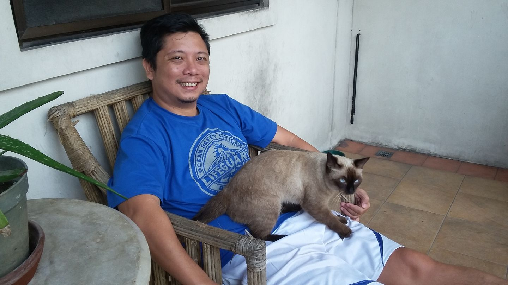

About Friendillion

Hey there, I'm
Francis!
I'm a Web Developer, Digital Content Creator, and
a Serial Entrepreneur.
The bulk of my time goes to helping Startup companies.
Everyday, I pick one small startup, then I write an article on how to launch an
effective marketing campaign for their B2C or B2B clients.
That process continues until they hit their mark.
How Friendillion Started?
Back in the day, I used to squabble for freelancing Web Dev
jobs.
There were good days and bad days, but in the end... I can't find
consistency in my line of work.
Yeah sure, I was able to make a buck or two, but I never found my
footing back then.
In those good and bad days, I was able to bump into some Investors, Startup Founders, Web Developers, Marketers, and almost anybody that you can think of in the Web Development World.
I almost forgot that to be successful in life, you need to be connected with the right people to elevate you and your business all the way to the top.
A quick thought then came into my mind...
Maybe if I begin being "Friendly" to people then maybe
people will be nicer to me.
Maybe they will start to open up a bit.
And you know what... that theory did happened.
And that my friends, is how and why I created
"Friendillion".
To gather "Winners" in the Web Development Realm.
Like them, I slowly transformed into a Winner. My net worth is my
network.
I gradually scaled up with the help of my new and old friends.
Now, I don't need to squabble for a freelance job.
It's the other way around now... Jobs are the one looking for me.
Now, I regularly receive messages from Startups inquiring about
Storytelling scripts,
Or an Investor asking suggestion on what
early-stage company to invest in,
Or a Web Developer imploring for
collaboration with me to join their own organization.
Anyway, that's my story. That's how it turned out... All good things!
How about you? What's yours?
Whatever that is... I want you to know that you are not alone in
this journey.
There are people out there who could help you. Collaboration is
the key.
Let's have that "Friendillion" mentality shall we.
Because if you do... life will be much easier.
Considering you possess a "Battalion of Friends" at your
disposal!
Here's to our success!